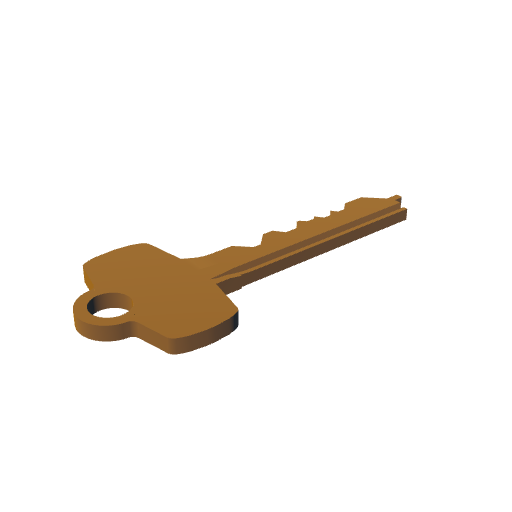

desk papers · 01 bundles
layout test — nothing decided
Curriculum vitae
2025— low design office 2024 shop architects 2023 b.arch, austin — labor · design · bim
update → 2026
LOW DESIGN OFFICE · RECEIVED ·
SEP 06 2026
2001 · 2010 · 2019 · 2024 · 2026
B. Fujimoto
architect · austin
log · films books records
Log
stalker — the rings of saturn pink moon, the long goodbye on longing · la jetée · 2026
again in sept.
the surface remembers what the record forgets — a crease, a thumbprint, the place where the pen ran dry. keep the sheet. the note is only its excuse.
untitled · graphite · 2026
print ↑
specification · 09 21 00
2.1 gypsum board assemblies 2.2 metal framing, 20 ga 2.3 acoustic insulation 3.1 install per mfr. instr.
ISSUED
Labor
a-101 · plan · record
rev 2 — see transmittal
transmittal
1 a-101 plan 2 a-201 elevations 3 a-501 details — issued for record
bf

guide
seal
arrangement
pile
spread
hit areas
outline
objects
shown
mockups
/
desk papers
/
01 bundles